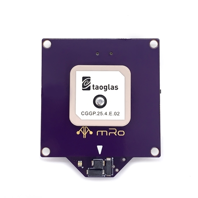

mRobotics Location One DroneCAN GPS¶
The mRo Location One is a multi-constellation GNSS powered by the new uBlox M9N module. This smart device is based on the ArduPilot AP_Periph CAN peripheral firmware.
Features¶
Ublox M9N high precision GPS
RM3100 High Precision Magnetic Compass
DPS310 Low noise Barometer
RGB Status LED
Push to “Arm” safety button
Designed for all DroneCAN compatible platforms.
Location One is not just a u-Blox chip populated on a purple reference GNSS board design. Patch antennas don’t work by themselves, they require a proper ground plane to achieve maximum performance and assure good reception at any angle. Without that, as with any RF system, the GNSS module will not achieve peak performance (or work at all). The Location One ground plane has been optimized for maximum performance.
配置¶
CAN_P1_DRIVER = 1
CAN_D1_PROTOCOL =1 (DroneCAN, should be set as default already)
GPS_TYPE = 9 (DroneCAN) if primary GPS or,
GPS_TYPE = 9 (DroneCAN) if using as secondary GPS
NTF_LED_TYPES set bit 5 (+32 to value) to enable LED as notification LED
BRD_SAFETY_DEFLT = 1 enables this, and any other, safety switch in the system. (
BRD_SAFETYENABLEin older firmware versions)
Compass¶
If your autopilot has more than 3 compasses connected, you should disable or change the priority on the least important one to allow this compass to be used. Even then, you may wish to prioritize this compass higher than others, or as the highest priority compass, due to its improved performance. See Compass Advanced Configuration page.
If you have any issues getting these devices recognized and used, follow the instructions on enabling the CANBUS in the CAN Bus Setup page, followed by DroneCAN Setup steps.